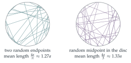

STEP III 2022, Question 12
Read the question before you go on. It is in the STEP III paper in OCR’s download of the 2022 STEP papers (a zip file): www.ocr.org.uk/Images/696587-2022-past-papers.zip
The hook
“Choose a chord of a circle at random. What is its expected length?” The question sounds as if it has an answer. It does not, until you say what “at random” means. Pick two random points on the circle and join them, and the expected length is \(\frac{4a}{\pi} \approx 1.27a\). Pick a random point inside the circle and a random direction through it, and the answer is \(\frac{16a}{3\pi} \approx 1.70a\). Both are perfectly reasonable ways to choose “a random chord”.
This is Bertrand’s paradox, published by Joseph Bertrand in 1889 as a warning. Probability is only well defined once the random experiment is specified. The paradox helped to push mathematicians towards the rigorous foundations of probability built in the twentieth century, in which every probability lives on a precisely defined space of outcomes.
Before you start
If the angle \(AOB\) is \(\theta\), what is the length of the chord \(AB\)? (Drop a perpendicular from \(O\).)
The perpendicular from \(O\) bisects the chord and the angle, so \(AB = 2a\sin\frac\theta2\).
Working it through
Stage 1 Two points on the circle
\[\mathrm{E}(AB) = \frac{1}{2\pi}\int_0^{2\pi}2a\sin\frac\theta2\,\mathrm{d}\theta = \frac{a}{\pi}\Bigl[-2\cos\frac\theta2\Bigr]_0^{2\pi} = \frac{a}{\pi}\cdot 4 = \frac{4a}{\pi}. \qed\]
Stage 2 A random point inside
What is \(\mathrm{P}(R \leq r)\) for \(0 \leq r \leq a\)? Differentiate to get the density.
\(\mathrm{P}(R \leq r)\) is the area of the disc of radius \(r\) divided by the area of the whole disc, \(\frac{r^2}{a^2}\). So \(R\) has density \(\frac{2r}{a^2}\) on \([0, a]\). (Points are more likely to be far from the centre, because there is more area there.)
A chord through \(C\) makes angle \(t\) with \(OC\). How far is the chord from \(O\)?
The distance from \(O\) to the line is \(R\sin t\), so the chord has length \(2\sqrt{a^2 - R^2\sin^2t}\).
Stage 3 Averaging over \(C\)
With \(s = \sin t\), \[\begin{aligned} L(t) &= \int_0^a 2\sqrt{a^2 - r^2s^2}\cdot\frac{2r}{a^2}\,\mathrm{d}r = \frac{4}{a^2}\Bigl[-\frac{(a^2 - r^2s^2)^{3/2}}{3s^2}\Bigr]_0^a \\ &= \frac{4}{a^2}\cdot\frac{a^3 - a^3(1 - s^2)^{3/2}}{3s^2} = \frac{4a(1 - \cos^3t)}{3\sin^2t}. \qed \end{aligned}\]
Factorise \(1 - \cos^3t\) and \(\sin^2t = 1 - \cos^2t\). What cancels?
With \(c = \cos t\), \(\frac{1 - c^3}{1 - c^2} = \frac{(1 - c)(1 + c + c^2)}{(1 - c)(1 + c)} = \frac{1 + c + c^2}{1 + c} = c + \frac{1}{1 + c}\), and \(1 + \cos t = 2\cos^2\frac t2\). So \[L(t) = \frac{4a}{3}\Bigl(\cos t + \tfrac12\sec^2\tfrac t2\Bigr). \qed\]
Stage 4 A random direction too
\[\begin{aligned} \mathrm{E}\bigl(L(T)\bigr) &= \frac2\pi\int_0^{\pi/2}\frac{4a}{3}\Bigl(\cos t + \tfrac12\sec^2\tfrac t2\Bigr)\mathrm{d}t \\ &= \frac{8a}{3\pi}\Bigl[\sin t + \tan\tfrac t2\Bigr]_0^{\pi/2} = \frac{8a}{3\pi}(1 + 1) = \frac{16a}{3\pi}. \qed \end{aligned}\]

Looking back
Specify the experiment. “A random chord” became a precise procedure in each part, and each procedure gave a different answer.
Densities from areas. \(\mathrm{P}(R \leq r)\) came directly from geometry; differentiating gave the density.
Average in stages. First over the position of \(C\) (with \(t\) fixed), then over \(t\).
What’s really going on
Bertrand’s three answers
Bertrand’s own question was: what is the probability that a random chord is longer than the side of the inscribed equilateral triangle, \(\sqrt3a\)? He gave three methods and three answers.
Random endpoints: fix one endpoint; the chord is long if the other lies in the middle third of the circle. Probability \(\frac13\).
Random radius and a random point on it as the midpoint: the chord is long if its distance from \(O\) is less than \(\frac a2\). Probability \(\frac12\).
Random midpoint anywhere in the disc: the chord is long if the midpoint lies within \(\frac a2\) of \(O\). Probability \(\frac14\).
Each method is a different probability distribution on the set of chords, and there is no contradiction: they answer different questions. The lesson is that “uniformly at random” only makes sense relative to a chosen parametrisation, and for continuous sets there is usually no single natural one.
Is there a right answer?
In 1973 the physicist Edwin Jaynes argued that the second method is the “right” one, on the grounds that the answer should not change if the circle is moved or rescaled slightly: a random chord should be like a straw thrown onto a circle drawn on the floor. Only the distribution with uniform distance from the centre has this invariance, and experiments throwing straws confirm \(\frac12\). The same idea, that the right distribution is the one that respects the symmetries of the situation, underlies integral geometry, the mathematics of random lines, which also explains Buffon’s needle in Section 12.20.
Bertrand published his chord paradox in Calcul des probabilités (1889), partly to mock what he saw as careless uses of “geometric probability”. Henri Poincaré discussed it too. In 1900 David Hilbert listed the axiomatisation of probability among his famous problems for the new century, and Andrey Kolmogorov solved it in 1933: probability is a measure on a space of outcomes, and every question about “random” objects must first say which space and which measure. Bertrand’s paradox is the standard example of why this is necessary.
The thinking skill
Before calculating a probability, describe exactly how the random object is generated. Different descriptions can give different answers.
At university, every probability calculation starts from a sample space and a probability measure. In statistics and physics, choosing the right model of randomness, often by symmetry, is a large part of the work.
Try this next
Bertrand’s probabilities. Verify the three probabilities \(\frac13\), \(\frac12\), \(\frac14\) above.
The other mean. Show that if the chord’s midpoint is chosen uniformly in the disc (the right-hand picture), the expected length is \(\frac{4a}{3}\). (Hint: this is \(L(\frac\pi2)\). Why?)
Random distance. If the distance of the chord from \(O\) is uniform on \([0, a]\), show that the expected length is \(\frac{\pi a}{2}\).
Three methods, three distributions. For each of the three methods, find the probability density of the chord’s length \(\ell\) on \([0, 2a]\).
Further reading
Edwin Jaynes, “The well-posed problem”, Foundations of Physics 3 (1973). The invariance argument, readable and provocative.
Gábor Székely, Paradoxes in Probability Theory and Mathematical Statistics (Reidel). Bertrand’s paradox and many others.
Daniel Klain & Gian-Carlo Rota, Introduction to Geometric Probability (Cambridge University Press). Integral geometry, for later.